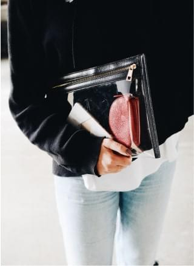

Mod Studio
Modern Web Studio
Biography
Katya Mills
Art Director
Scenography
Styling
Creative Photography
Design
“The more I deal with the work as something that is my own, as something that is personal, the more successful it is.”
Designers
Jess Wonder
Be more flower
Design Strategy / Marketing

Kameron Clein
Be more flower
Design Strategy / Marketing

Louisse Red
Be more flower
Design Strategy / Marketing
Kameron Clein
Be more flower
Design Strategy / Marketing
Jess Wonder
Be more flower
Design Strategy / Marketing
Kameron Clein
Be more flower
Design Strategy / Marketing
Testimonials
I just really want to do good work and work with some great people, people who challenge me.